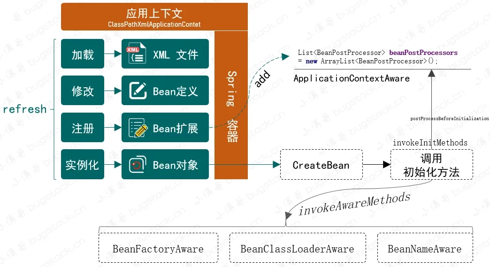
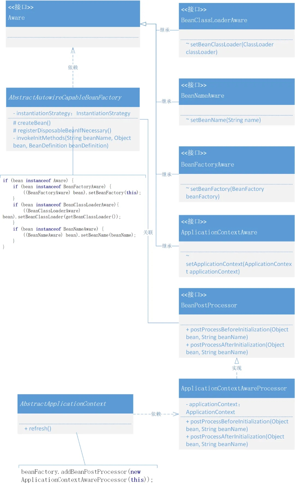

spring
定义标记类型Aware接口，实现感知容器对象
1. 目标
目前已实现的 Spring 框架，在 Bean 操作上能提供出的能力，包括：Bean 对象的定义和注册 ，以及在操作 Bean 对象过程中执行的 ，BeanFactoryPostProcessor、BeanPostProcessor、InitializingBean、DisposableBean，以及在 XML 新增的一些配置处理，让我们可以 Bean 对象有更强的操作性。
那么，如果我们想获得 Spring 框架提供的 BeanFactory、ApplicationContext、BeanClassLoader等这些能力做一些扩展框架的使用时该怎么操作呢。所以我们本章节希望在 Spring 框架中提供一种能感知容器操作的接口 ，如果谁实现了这样的一个接口，就可以获取接口入参中的各类能力。
2. 设计
如果说我希望拿到 Spring 框架中一些提供的资源，那么首先需要考虑以一个什么方式去获取，之后你定义出来的获取方式，在 Spring 框架中该怎么去承接，实现了这两项内容，就可以扩展出你需要的一些属于 Spring 框架本身的能力了。
在关于 Bean 对象实例化阶段我们操作过一些额外定义、属性、初始化和销毁的操作，其实我们如果像获取 Spring 一些如 BeanFactory、ApplicationContext 时，也可以通过此类方式进行实现。那么我们需要定义一个标记性的接口 ，这个接口不需要有方法，它只起到标记作用 就可以，而具体的功能由继承此接口的其他功能性接口定义具体方法 ，最终这个接口就可以通过 instanceof 进行判断和调用了。整体设计结构如下图：

定义接口 Aware ，在 Spring 框架中它是一种感知标记性接口 ，具体的子类定义和实现能感知容器中的相关对象。也就是通过这个桥梁，向具体的实现类中提供容器服务继承 Aware 的接口包括：BeanFactoryAware、BeanClassLoaderAware、BeanNameAware和ApplicationContextAware，当然在 Spring 源码中还有一些其他关于注解的，不过目前我们还是用不到。
在具体的接口实现过程中你可以看到，一部分(BeanFactoryAware、BeanClassLoaderAware、BeanNameAware)在 factory 的 support 文件夹下，另外 ApplicationContextAware 是在 context 的 support 中，这是因为不同的内容获取需要在不同的包下提供。所以，在 AbstractApplicationContext 的具体实现中会用到向 beanFactory 添加 BeanPostProcessor 内容的 ApplicationContextAwareProcessor 操作，最后由 AbstractAutowireCapableBeanFactory 创建 createBean 时处理相应的调用操作。关于 applyBeanPostProcessorsBeforeInitialization 已经在前面章节中实现过，如果忘记可以往前翻翻
3. 实现
1. 工程结构
Text Only
Spring 感知接口的设计和实现类关系：

以上整个类关系就是关于 Aware 感知的定义和对容器感知的实现。
Aware 有四个继承的接口，其他这些接口的继承都是为了继承一个标记，有了标记的存在更方便类的操作和具体判断实现。另外由于 ApplicationContext 并不是在 AbstractAutowireCapableBeanFactory 中 createBean 方法下的内容，所以需要像容器中注册 addBeanPostProcessor ，再由 createBean 统一调用 applyBeanPostProcessorsBeforeInitialization 时进行操作。
2. 定义标记接口
Java public interface Aware {
}
在 Spring 中有特别多类似这样的标记接口的设计方式，它们的存在就像是一种标签一样，可以方便统一摘取出属于此类接口的实现类，通常会有 instanceof 一起判断使用。
3. 容器感知类
1. BeanFactoryAware
Java public interface BeanFactoryAware extends Aware {
void setBeanFactory ( BeanFactory beanFactory ) throws BeansException ;
}
Interface to be implemented by beans that wish to be aware of their owning {@link BeanFactory}.
实现此接口，既能感知到所属的 BeanFactory
2. BeanClassLoaderAware
Java public interface BeanClassLoaderAware extends Aware {
void setBeanClassLoader ( ClassLoader classLoader );
}
Callback that allows a bean to be aware of the bean{@link ClassLoader class loader}; that is, the class loader used by the present bean factory to load bean classes.
实现此接口，既能感知到所属的 ClassLoader
3. BeanNameAware
Java public interface BeanNameAware extends Aware {
void setBeanName ( String beanName );
}
Interface to be implemented by beans that want to be aware of their bean name in a bean factory.
实现此接口，既能感知到所属的 BeanName
4. ApplicationContextAware
Java public interface ApplicationContextAware extends Aware {
void setApplicationContext ( ApplicationContext applicationContext ) throws BeansException ;
}
Interface to be implemented by any object that wishes to be notifiedof the {@link ApplicationContext} that it runs in.
实现此接口，既能感知到所属的 ApplicationContext
4. 包装处理器(ApplicationContextAwareProcessor)
Java public class ApplicationContextAwareProcessor implements BeanPostProcessor {
private final ApplicationContext applicationContext ;
public ApplicationContextAwareProcessor ( ApplicationContext applicationContext ) {
this . applicationContext = applicationContext ;
}
@Override
public Object postProcessBeforeInitialization ( Object bean , String beanName ) throws BeansException {
if ( bean instanceof ApplicationContextAware ) {
(( ApplicationContextAware ) bean ). setApplicationContext ( this . applicationContext );
}
return bean ;
}
@Override
public Object postProcessAfterInitialization ( Object bean , String beanName ) throws BeansException {
return bean ;
}
}
由于 ApplicationContext 的获取并不能直接在创建 Bean 时候就可以拿到，所以需要在 refresh 操作时，把 ApplicationContext 写入到一个包装的 BeanPostProcessor 中去，再由 AbstractAutowireCapableBeanFactory.applyBeanPostProcessorsBeforeInitialization 方法调用。
5. 注册 BeanPostProcessor
Java public abstract class AbstractApplicationContext extends DefaultResourceLoader implements ConfigurableApplicationContext {
@Override
public void refresh () throws BeansException {
// 1. 创建 BeanFactory，并加载 BeanDefinition
refreshBeanFactory ();
// 2. 获取 beanFactory
ConfigurableListableBeanFactory beanFactory = getBeanFactory ();
// 3. 添加 ApplicationContextAwareProcessor，让继承自 ApplicationContextAware 的 Bean 对象都能感知所属的 ApplicationContext
beanFactory . addBeanPostProcessor ( new ApplicationContextAwareProcessor ( this ));
// 4. 在 Bean 实例化之前，执行 BeanFactoryPostProcessor (Invoke factory processors registered as beans in the context.)
invokeBeanFactoryPostProcessors ( beanFactory );
// 5. BeanPostProcessor 需要提前于其他 Bean 对象实例化之前执行注册操作
registerBeanPostProcessors ( beanFactory );
// 6. 提前实例化单例Bean对象
beanFactory . preInstantiateSingletons ();
}
}
refresh() 方法就是整个 Spring 容器的操作过程，与上一章节对比，本次新增加了关于 addBeanPostProcessor 的操作。添加 ApplicationContextAwareProcessor，让继承自 ApplicationContextAware 的 Bean 对象都能感知所属的 ApplicationContext。
6. 感知调用操作
Java public abstract class AbstractAutowireCapableBeanFactory extends AbstractBeanFactory implements AutowireCapableBeanFactory {
private InstantiationStrategy instantiationStrategy = new CglibSubclassingInstantiationStrategy ();
@Override
protected Object createBean ( String beanName , BeanDefinition beanDefinition , Object [] args ) throws BeansException {
Object bean = null ;
try {
bean = createBeanInstance ( beanDefinition , beanName , args );
// 给 Bean 填充属性
applyPropertyValues ( beanName , bean , beanDefinition );
// 执行 Bean 的初始化方法和 BeanPostProcessor 的前置和后置处理方法
bean = initializeBean ( beanName , bean , beanDefinition );
} catch ( Exception e ) {
throw new BeansException ( "Instantiation of bean failed" , e );
}
// 注册实现了 DisposableBean 接口的 Bean 对象
registerDisposableBeanIfNecessary ( beanName , bean , beanDefinition );
addSingleton ( beanName , bean );
return bean ;
}
private Object initializeBean ( String beanName , Object bean , BeanDefinition beanDefinition ) {
// invokeAwareMethods
if ( bean instanceof Aware ) {
if ( bean instanceof BeanFactoryAware ) {
(( BeanFactoryAware ) bean ). setBeanFactory ( this );
}
if ( bean instanceof BeanClassLoaderAware ){
(( BeanClassLoaderAware ) bean ). setBeanClassLoader ( getBeanClassLoader ());
}
if ( bean instanceof BeanNameAware ) {
(( BeanNameAware ) bean ). setBeanName ( beanName );
}
}
// 1. 执行 BeanPostProcessor Before 处理
Object wrappedBean = applyBeanPostProcessorsBeforeInitialization ( bean , beanName );
// 执行 Bean 对象的初始化方法
try {
invokeInitMethods ( beanName , wrappedBean , beanDefinition );
} catch ( Exception e ) {
throw new BeansException ( "Invocation of init method of bean[" + beanName + "] failed" , e );
}
// 2. 执行 BeanPostProcessor After 处理
wrappedBean = applyBeanPostProcessorsAfterInitialization ( bean , beanName );
return wrappedBean ;
}
@Override
public Object applyBeanPostProcessorsBeforeInitialization ( Object existingBean , String beanName ) throws BeansException {
Object result = existingBean ;
for ( BeanPostProcessor processor : getBeanPostProcessors ()) {
Object current = processor . postProcessBeforeInitialization ( result , beanName );
if ( null == current ) return result ;
result = current ;
}
return result ;
}
@Override
public Object applyBeanPostProcessorsAfterInitialization ( Object existingBean , String beanName ) throws BeansException {
Object result = existingBean ;
for ( BeanPostProcessor processor : getBeanPostProcessors ()) {
Object current = processor . postProcessAfterInitialization ( result , beanName );
if ( null == current ) return result ;
result = current ;
}
return result ;
}
}
这里我们去掉了一些类的内容，只保留关于本次 Aware 感知接口的操作。
首先在 initializeBean 中，通过判断 bean instanceof Aware，调用了三个接口方法，BeanFactoryAware.setBeanFactory(this)、BeanClassLoaderAware.setBeanClassLoader(getBeanClassLoader())、BeanNameAware.setBeanName(beanName)，这样就能通知到已经实现了此接口的类。
另外我们还向 BeanPostProcessor 中添加了 ApplicationContextAwareProcessor，此时在这个方法中也会被调用到具体的类实现，得到一个 ApplicationContex 属性。
4. 测试
1. 测试bean
Java public class UserDao {
private static Map < String , String > hashMap = new HashMap <> ();
public void initDataMethod (){
System . out . println ( "执行：init-method" );
hashMap . put ( "10001" , "苍镜月" );
}
public void destroyDataMethod (){
System . out . println ( "执行：destroy-method" );
hashMap . clear ();
}
public String queryUserName ( String uId ) {
return hashMap . get ( uId );
}
}
Java public class UserService implements BeanNameAware , BeanClassLoaderAware , ApplicationContextAware , BeanFactoryAware {
private ApplicationContext applicationContext ;
private BeanFactory beanFactory ;
private String uId ;
private String company ;
private String location ;
private UserDao userDao ;
@Override
public void setBeanFactory ( BeanFactory beanFactory ) throws BeansException {
this . beanFactory = beanFactory ;
}
@Override
public void setApplicationContext ( ApplicationContext applicationContext ) throws BeansException {
this . applicationContext = applicationContext ;
}
@Override
public void setBeanName ( String name ) {
System . out . println ( "Bean Name is：" + name );
}
@Override
public void setBeanClassLoader ( ClassLoader classLoader ) {
System . out . println ( "ClassLoader：" + classLoader );
}
public String queryUserInfo () {
return userDao . queryUserName ( uId ) + "," + company + "," + location ;
}
// ...
}
2. 配置文件
XML <?xml version="1.0" encoding="UTF-8"?>
<beans>
<bean id= "userDao" class= "test.bean.UserDao" init-method= "initDataMethod" destroy-method= "destroyDataMethod" />
<bean id= "userService" class= "test.bean.UserService" >
<property name= "uId" value= "10001" />
<property name= "company" value= "腾讯" />
<property name= "location" value= "深圳" />
<property name= "userDao" ref= "userDao" />
</bean>
</beans>
3. 单元测试
Java public class ApiTest {
@Test
public void test_xml () {
// 1.初始化 BeanFactory
ClassPathXmlApplicationContext applicationContext = new ClassPathXmlApplicationContext ( "classpath:spring.xml" );
applicationContext . registerShutdownHook ();
// 2. 获取Bean对象调用方法
UserService userService = applicationContext . getBean ( "userService" , UserService . class );
String result = userService . queryUserInfo ();
System . out . println ( "测试结果：" + result );
System . out . println ( "ApplicationContextAware：" + userService . getApplicationContext ());
System . out . println ( "BeanFactoryAware：" + userService . getBeanFactory ());
}
}
测试结果：
result
参考资料
(https://mp.weixin.qq.com/s/KP_4IQ2MZ-Pzq80WrJpCOA)[https://mp.weixin.qq.com/s/KP_4IQ2MZ-Pzq80WrJpCOA]
2024-11-24
GitHub